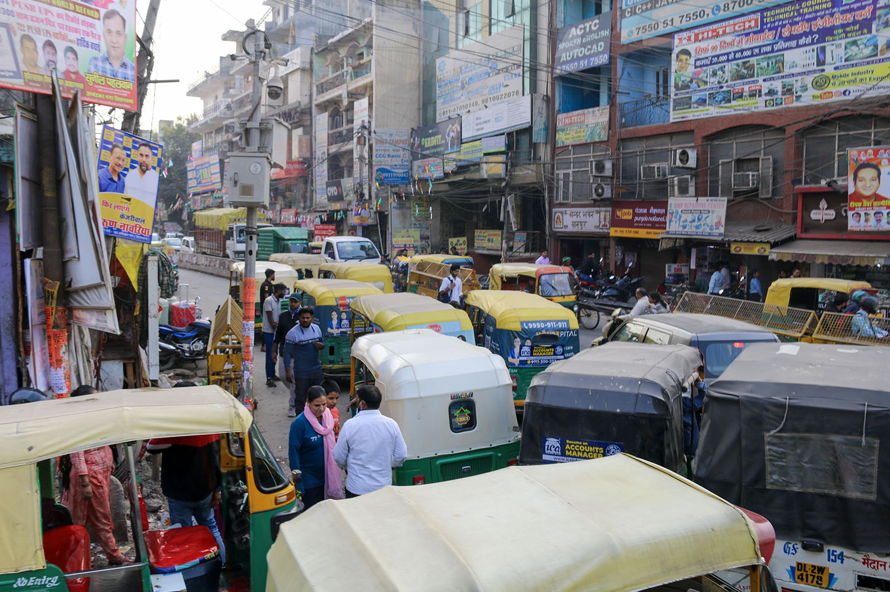

Chapter 3 of 22
Arrival in Delhi

We are finally in Delhi! Following the recommendations from the Waqf-e-Nau admin team, we made sure all group members were armed with masks as we navigated our way through the airport. Despite the anticipated concerns regarding customs and immigration, the process was, for the most part, seamless. We retrieved our bags and walked out to Gate 5, where members of the Delhi Jamaat greeted us with a sign that read “Waqf-e-Nau.”
We were home.
That’s the beauty of Jamaat Ahmadiyya. As servants of the Holy Prophet Muhammad (sa) and the Promised Messiah (as), wherever we go in the world, we are home. Within this community, we find ourselves both hosts and guests, united by bonds that transcend borders and time. We met Saeed Sahib and Fateh Sahib of the Delhi Jamaat, and though it was our first encounter, it felt as if we had known them forever.
After a short wait, we loaded into a van and set off for Masjid Baitul Hadi. Along the way, I reflected on the remarkable history of Delhi, one of India’s most ancient cities. Over centuries, it has been destroyed and rebuilt numerous times, yet it remains a city that refuses to be forgotten.
Delhi also holds special significance for us as the hometown of Hazrat Amma Jaan, Hazrat Nusrat Jahan Begum Sahiba (ra). Her brother, Hazrat Mir Muhammad Ismael (ra), hailed from here as well. A renowned Hakeem by profession, he also wrote the famous Urdu naat “Badar Gaah-e-Zeeshan Khairul Anaam.”
Speaking of Urdu, this city is the cradle of the language itself. Born between Delhi and Agra, Urdu emerged as a blend of regional languages and eventually became the language of the Mughal courts. Literary giants like Mirza Ghalib, Mir Taqi Mir, Ibrahim Zauq, Hakeem Momin, and Altaf Hussain Hali either lived here or were deeply connected to Delhi’s cultural fabric. It is a city that breathes poetry and carries centuries of history in its walls.
Within 40 minutes, we arrived at Masjid Baitul Hadi. MashaAllah, the mosque is stunning. On the left is a spacious prayer hall for men, with a ladies' prayer area annexed in the balcony above it. In the center are the kitchen and offices on the ground floor, while the guest house occupies the second floor. To the right is the residence for the local missionary.
This masjid holds its own historic significance. Both Hazrat Mirza Tahir Ahmad (rh) and Hazrat Mirza Masroor Ahmad (aba) have visited this mosque and stayed in its guest house during their respective trips to India.